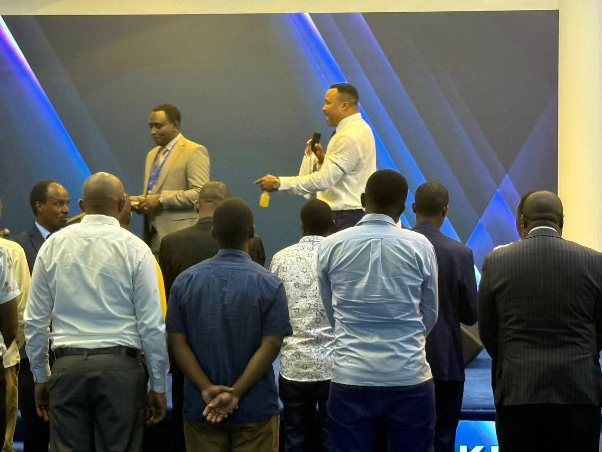
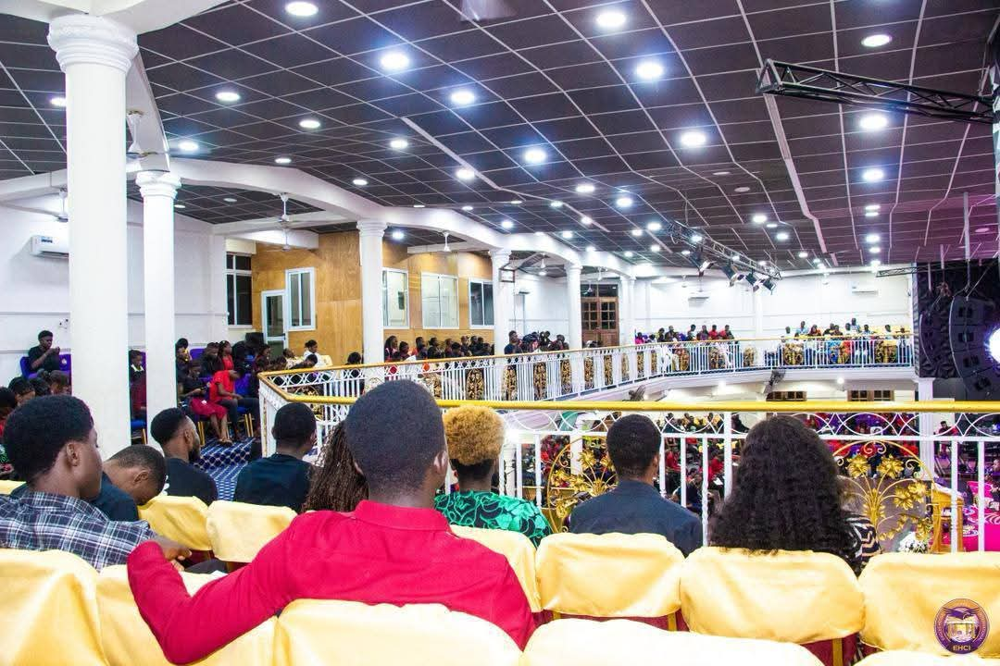
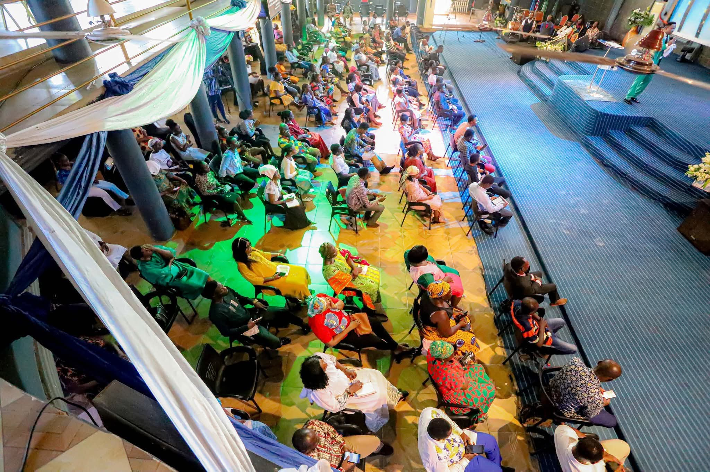

Leadership Seminars
Developing effective leaders with vision, courage, and integrity to influence both church and society.

Youth Empowerment
Equipping the next generation with practical skills, confidence, and spiritual strength to thrive in life.


Ministry Training
Hands-on programs for ministers and workers to grow in biblical knowledge and service effectiveness.